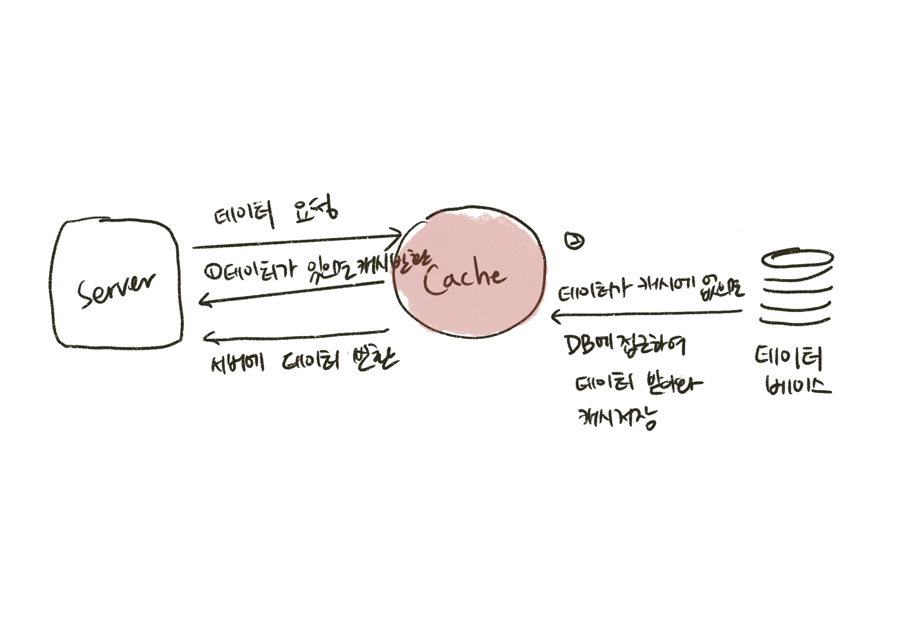
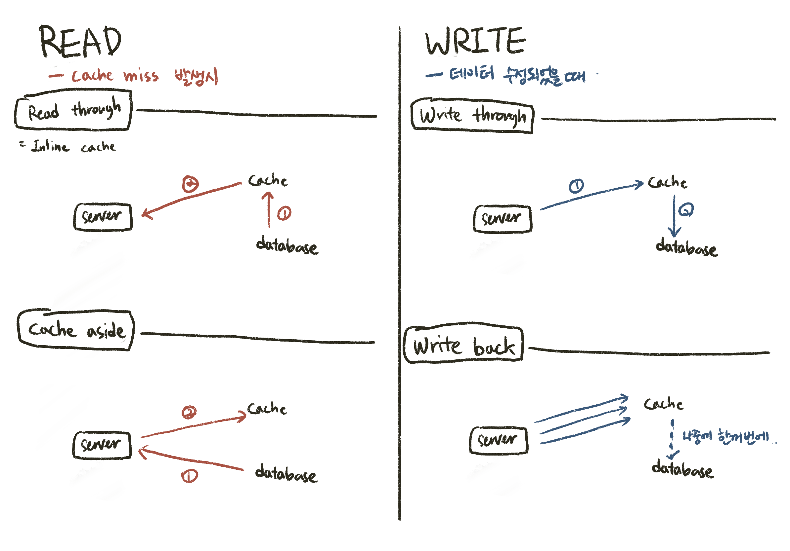

<!DOCTYPE html>
<html lang="en">

<head>
    <meta charset="utf-8">
    <meta name="viewport" content="width=device-width, initial-scale=1">
    <title>API 성능개선 : Redis Cache를 적용하여 Read 기능을 개선해보자</title>
    <link rel="stylesheet" href="../assets/built/screen.css%3Fv=3de860f2cd.css">
    <link rel="stylesheet" href="https://cdnjs.cloudflare.com/ajax/libs/tocbot/4.13.5/tocbot.min.css" integrity="sha512-SFw7k74K3983tyOlJIHa8atr9Ppef3Kix5cmifwzU7ZdtU2E0FRuOVRtd3ENpMJ8sNCie5hlb/0j23efcdQJXA==" 	crossorigin="anonymous" referrerpolicy="no-referrer" />
    
    <link rel="stylesheet" href="https://cdnjs.cloudflare.com/ajax/libs/tocbot/4.12.3/tocbot.css">
    
    <style>
        .gh-content {
            position: relative;
        }

        .gh-toc > .toc-list {
            position: relative;
        }

        .toc-list {
            overflow: hidden;
            list-style: none;
            font-size: smaller;
        }

        @media (min-width: 1300px) {
            .gh-sidebar {
                position: absolute; 
                top: 10vmin;
                bottom: 0;
                margin-top: 4vmin;
                grid-column: wide-start / main-start; /* Place the TOC to the left of the content */
            }
        
            .gh-toc {
                position: sticky; /* On larger screens, TOC will stay in the same spot on the page */
                top: 4vmin;
            }
        }

        .gh-toc .is-active-link::before {
            background-color: var(--ghost-accent-color); /* Defines TOC   accent color based on Accent color set in Ghost Admin */
        } 
    </style>
    <link rel="icon" href="../content/images/size/w256h256/2023/08/ringed-planet_1fa90.png" type="image/png">
    <link rel="canonical" href="index.html">
    <meta name="referrer" content="no-referrer-when-downgrade">
    
    <meta property="og:site_name" content="new-pow&#x27;s space">
    <meta property="og:type" content="article">
    <meta property="og:title" content="API 성능개선 : Redis Cache를 적용하여 Read 기능을 개선해보자">
    <meta property="og:description" content="이 글은 당근마켓을 모티브로 한 프로젝트 Secondhand 구현시 이슈 사항을 정리한 글입니다.


사실 처음 시작은 조회수 구현을 어떻게 효율적으로 할 수 있을까에서 출발하였습니다. [조회수 관련해서 참고한 블로그 글] 세션별로 중복되지 않게 일정 시간동안 1회씩 카운팅하고 싶은 욕심이었습니다.


그런데 학습을 하다보니 레디스 Cache를 읽기 API에서도 사용해보고 싶더라고요🔥 API 성능을 개선해본 뒤">
    <meta property="og:url" content="http://localhost:2369/api-seongneunggaeseon-redis-cachereul-jeogyonghayeo-seongneungeul-gaeseonhaeboja/">
    <meta property="og:image" content="http://localhost:2369/content/images/2023/08/Carina_Dwarf_Galaxy.jpeg">
    <meta property="article:published_time" content="2023-09-18T09:05:30.000Z">
    <meta property="article:modified_time" content="2023-11-12T14:53:16.000Z">
    <meta property="article:tag" content="Secondhand">
    <meta property="article:tag" content="Cache">
    <meta property="article:tag" content="Projects">
    <meta property="article:tag" content="Posts">
    
    <meta property="article:publisher" content="https://www.facebook.com/ghost">
    <meta name="twitter:card" content="summary_large_image">
    <meta name="twitter:title" content="API 성능개선 : Redis Cache를 적용하여 Read 기능을 개선해보자">
    <meta name="twitter:description" content="이 글은 당근마켓을 모티브로 한 프로젝트 Secondhand 구현시 이슈 사항을 정리한 글입니다.


사실 처음 시작은 조회수 구현을 어떻게 효율적으로 할 수 있을까에서 출발하였습니다. [조회수 관련해서 참고한 블로그 글] 세션별로 중복되지 않게 일정 시간동안 1회씩 카운팅하고 싶은 욕심이었습니다.


그런데 학습을 하다보니 레디스 Cache를 읽기 API에서도 사용해보고 싶더라고요🔥 API 성능을 개선해본 뒤">
    <meta name="twitter:url" content="http://localhost:2369/api-seongneunggaeseon-redis-cachereul-jeogyonghayeo-seongneungeul-gaeseonhaeboja/">
    <meta name="twitter:image" content="http://localhost:2369/content/images/2023/08/Carina_Dwarf_Galaxy.jpeg">
    <meta name="twitter:label1" content="Written by">
    <meta name="twitter:data1" content="saehim lee">
    <meta name="twitter:label2" content="Filed under">
    <meta name="twitter:data2" content="Secondhand, Cache, Projects, Posts">
    <meta name="twitter:site" content="@ghost">
    <meta property="og:image:width" content="2000">
    <meta property="og:image:height" content="1668">
    
    <script type="application/ld+json">
{
    "@context": "https://schema.org",
    "@type": "Article",
    "publisher": {
        "@type": "Organization",
        "name": "new-pow&#x27;s space",
        "url": "http://localhost:2369/",
        "logo": {
            "@type": "ImageObject",
            "url": "http://localhost:2369/content/images/2023/09/ringed-planet_1fa90-1.png",
            "width": 60,
            "height": 60
        }
    },
    "author": {
        "@type": "Person",
        "name": "saehim lee",
        "image": {
            "@type": "ImageObject",
            "url": "http://localhost:2369/content/images/2023/08/IMG_1283-1.JPG",
            "width": 1440,
            "height": 1080
        },
        "url": "http://localhost:2369/author/saehim/",
        "sameAs": []
    },
    "headline": "API 성능개선 : Redis Cache를 적용하여 Read 기능을 개선해보자",
    "url": "http://localhost:2369/api-seongneunggaeseon-redis-cachereul-jeogyonghayeo-seongneungeul-gaeseonhaeboja/",
    "datePublished": "2023-09-18T09:05:30.000Z",
    "dateModified": "2023-11-12T14:53:16.000Z",
    "keywords": "Secondhand, Cache, Projects, Posts",
    "description": "이 글은 당근마켓을 모티브로 한 프로젝트 Secondhand 구현시 이슈 사항을 정리한 글입니다.\n\n\n사실 처음 시작은 조회수 구현을 어떻게 효율적으로 할 수 있을까에서 출발하였습니다. [조회수 관련해서 참고한 블로그 글] 세션별로 중복되지 않게 일정 시간동안 1회씩 카운팅하고 싶은 욕심이었습니다.\n\n\n그런데 학습을 하다보니 레디스 Cache를 읽기 API에서도 사용해보고 싶더라고요🔥 API 성능을 개선해본 뒤 차근차근 조회수도 개선해보도록 하겠습니다.\n\n\n\n\n\n\nCache에 대하여\n\n\n캐시 Cache는 자주 사용하는 연산에 대하여 속도가 빠른 임시 공간에 저장해두어 애플리케이션 연산 속도를 높일 수 있습니다.\n\n\nCache는 나중에 요청을 위해 결과를 미리 저장해두었다가 빠르게 서비스 해주는 것을 의미합니다.\n- 우아한레디스 (강대명)\n\n\n\n\n\n애플리케이션이 Database(Disk)에 접속하여 데이터를 읽어오는 것보다는 자주 읽는 데이터를 애플리케이션이 빠르게 접근할 수 있는 ",
    "mainEntityOfPage": "http://localhost:2369/api-seongneunggaeseon-redis-cachereul-jeogyonghayeo-seongneungeul-gaeseonhaeboja/"
}
    </script>

    <meta name="generator" content="Ghost 5.62">
    <link rel="alternate" type="application/rss+xml" title="new-pow&#x27;s space" href="../rss/index.html">
    
    <script defer src="https://cdn.jsdelivr.net/ghost/sodo-search@~1.1/umd/sodo-search.min.js" data-key="d57bf7b304bcc3e0002dfc2775" data-styles="https://cdn.jsdelivr.net/ghost/sodo-search@~1.1/umd/main.css" data-sodo-search="http://localhost:2369/" crossorigin="anonymous"></script>
    
    <link href="http://localhost:2369/webmentions/receive/" rel="webmention">
    <script defer src="../public/cards.min.js%3Fv=3de860f2cd"></script>
    <link rel="stylesheet" type="text/css" href="../public/cards.min.css%3Fv=3de860f2cd.css">
    <link href='https://rsms.me/inter/inter.css' rel='stylesheet' type='text/css'>
<link href='https://spoqa.github.io/spoqa-han-sans/css/SpoqaHanSans-kr.css' rel='stylesheet' type='text/css'>
<style>
/* 전체 폰트 크기 설정 */
body,  
h1, h2, h3, h4, h5, h6,
.main-nav a,
.subscribe-button,
.page-title,
.post-meta,
.read-next-story .post:before,
.pagination,
.site-footer,
.post-full-content,
.post-card-excerpt,
.post-full-custom-excerpt,
[class^="icon-"]:before,
[class*=" icon-"]:before { /* 여기에 원하는 폰트 크기를 지정하세요. */
    font-family: "Pretendard Variable", Pretendard, -apple-system, BlinkMacSystemFont, system-ui, Roboto, "Helvetica Neue", "Segoe UI", "Apple SD Gothic Neo", "Noto Sans KR", "Malgun Gothic", "Apple Color Emoji", "Segoe UI Emoji", "Segoe UI Symbol", sans-serif;
}
    
@media (min-width: 1300px)
.gh-sidebar {
    position: absolute;
    top: 2vmin;
    bottom: 0;
    margin-top: 4vmin;
    margin-right: 4vmin;
    grid-column: wide-start / main-start;
}

/* Prism 코드 블록 폰트 크기 설정 (예시) */
/* .token 태그는 Prism 라이브러리가 생성하는 코드 블록 요소를 가리킵니다. */
.token {
    font-size: 14px; /* 코드 블록 폰트 크기를 14px로 설정 */
}

/* Table of Contents (TOC) 폰트 크기 설정 (예시) */
/* .toc-link 클래스는 TOC 요소를 가리킵니다. */
.toc-link {
    font-size: 14px; /* TOC 폰트 크기를 16px로 설정 */
}

</style>

<style>  
.gh-canvas .article-image img {  
	max-width: 350px;  
	height: auto;  
}  
</style>

<link rel="stylesheet" href="https://cdnjs.cloudflare.com/ajax/libs/prism/1.28.0/themes/prism-tomorrow.min.css" integrity="sha512-vswe+cgvic/XBoF1OcM/TeJ2FW0OofqAVdCZiEYkd6dwGXthvkSFWOoGGJgS2CW70VK5dQM5Oh+7ne47s74VTg==" crossorigin="anonymous" referrerpolicy="no-referrer" />

<link rel="stylesheet" href="https://cdnjs.cloudflare.com/ajax/libs/tocbot/4.13.5/tocbot.min.css" integrity="sha512-SFw7k74K3983tyOlJIHa8atr9Ppef3Kix5cmifwzU7ZdtU2E0FRuOVRtd3ENpMJ8sNCie5hlb/0j23efcdQJXA==" crossorigin="anonymous" referrerpolicy="no-referrer" />
<script src="https://cdnjs.cloudflare.com/ajax/libs/tocbot/4.13.5/tocbot.min.js" integrity="sha512-Pb1ryJBQ8yanWB5d4BaW6AyQsPNkB3m9dVNLpwYeyQA3jxM/NJtLXsB0DU4VOD0EBbJBXm8LOnwsVnQCdClwgg==" crossorigin="anonymous" referrerpolicy="no-referrer"></script><style>:root {--ghost-accent-color: #ff7070;}</style>
</head>

<body class="post-template tag-secondhand tag-cache tag-projects tag-posts is-head-left-logo">
<div class="gh-site">

    <header id="gh-head" class="gh-head gh-outer">
        <div class="gh-head-inner gh-inner">
            <div class="gh-head-brand">
                <div class="gh-head-brand-wrapper">
                    
                    <a class="gh-head-logo" href="../index.html">
                            
                                
                    </a>
                    
                </div>
                <button class="gh-search gh-icon-btn" aria-label="Search this site" data-ghost-search><svg xmlns="http://www.w3.org/2000/svg" fill="none" viewBox="0 0 24 24" stroke="currentColor" stroke-width="2" width="20" height="20"><path stroke-linecap="round" stroke-linejoin="round" d="M21 21l-6-6m2-5a7 7 0 11-14 0 7 7 0 0114 0z"></path></svg></button>
                <button class="gh-burger"></button>
            </div>

            <nav class="gh-head-menu">
                <ul class="nav">
    <li class="nav-about"><a href="../about/index.html">About</a></li>
    <li class="nav-posts"><a href="../tag/posts/index.html">Posts</a></li>
    <li class="nav-to-blog"><a href="https://new-pow.tistory.com/">to Blog</a></li>
</ul>

            </nav>

            <div class="gh-head-actions">
                        <button class="gh-search gh-icon-btn" aria-label="Search this site" data-ghost-search><svg xmlns="http://www.w3.org/2000/svg" fill="none" viewBox="0 0 24 24" stroke="currentColor" stroke-width="2" width="20" height="20"><path stroke-linecap="round" stroke-linejoin="round" d="M21 21l-6-6m2-5a7 7 0 11-14 0 7 7 0 0114 0z"></path></svg></button>
            </div>
        </div>
    </header>

    
<main class="gh-main">
        <article class="gh-article post tag-secondhand tag-cache tag-projects tag-posts no-image">

            <header class="gh-article-header gh-canvas">
                    <a class="gh-article-tag" href="../tag/secondhand/index.html">Secondhand</a>

                <h1 class="gh-article-title">API 성능개선 : Redis Cache를 적용하여 Read 기능을 개선해보자</h1>

                    <aside class="gh-article-sidebar">

        <div class="gh-author-image-list">
                <a class="gh-author-image" href="../author/saehim/index.html">
                        
                </a>
        </div>

        <div class="gh-author-name-list">
                <h4 class="gh-author-name">
                    <a href="../author/saehim/index.html">saehim lee</a>
                </h4>
                
        </div>

        <div class="gh-article-meta">
            <div class="gh-article-meta-inner">
                <time class="gh-article-date" datetime="2023-09-18">Sep 18, 2023</time>
                    <span class="gh-article-meta-sep"></span>
                    <span class="gh-article-length">8 min</span>
            </div>
        </div>

    </aside>


                            </header>


            <section class="gh-content gh-canvas">
                <br>
                <aside class="gh-sidebar"><div class="gh-toc"></div></aside> 

                <blockquote>이 글은 당근마켓을 모티브로 한 프로젝트&nbsp;<a href="https://github.com/masters2023-2nd-project-05/second-hand?ref=localhost">Secondhand</a>&nbsp;구현시 이슈 사항을 정리한 글입니다.</blockquote>
<p>사실 처음 시작은 조회수 구현을 어떻게 효율적으로 할 수 있을까에서 출발하였습니다.  <a href="https://webisfree.com/2017-11-13/redis%EB%A5%BC-%EC%82%AC%EC%9A%A9%ED%95%9C-view-count-%EB%B0%A9%EB%AC%B8%EC%9E%90-%EC%88%98-%EA%B4%80%EB%A6%AC%ED%95%98%EB%8A%94-%ED%9A%A8%EA%B3%BC%EC%A0%81%EC%9D%B8-%EB%B0%A9%EB%B2%95%EC%9D%80?ref=localhost" rel="noreferrer">[조회수 관련해서 참고한 블로그 글]</a> 세션별로 중복되지 않게 일정 시간동안 1회씩 카운팅하고 싶은 욕심이었습니다.</p>
<p>그런데 학습을 하다보니 레디스 Cache를 읽기 API에서도 사용해보고 싶더라고요🔥  API 성능을 개선해본 뒤 차근차근 조회수도 개선해보도록 하겠습니다.</p>
<p></p>
<h1 id="cache%EC%97%90-%EB%8C%80%ED%95%98%EC%97%AC">Cache에 대하여</h1>
<p>캐시 Cache는 자주 사용하는 연산에 대하여 속도가 빠른 임시 공간에 저장해두어 애플리케이션 연산 속도를 높일 수 있습니다.</p>
<blockquote>Cache는 나중에 요청을 위해 결과를 미리 저장해두었다가 빠르게 서비스 해주는 것을 의미합니다.<br><a href="https://youtu.be/mPB2CZiAkKM?si=LEAY_WRG-07JMvPm&ref=localhost" rel="noreferrer">- 우아한레디스 (강대명)</a></blockquote>
<p></p>
<p>애플리케이션이 Database(Disk)에 접속하여 데이터를 읽어오는 것보다는 자주 읽는 데이터를 애플리케이션이 빠르게 접근할 수 있는 메모리에 올려두고 빠르게 가져와 사용하는 것이지요. 창고에 있는 데이터를 책상에 올려두는 것과 같습니다.</p>
<p>비단 읽는 것뿐만 아니라 쓰기작업 혹은 연산 작업에도 적용됩니다. 다이나믹 프로그래밍을 생각해보세요. 중간 연산 결과를 계속 캐싱하여 다음 연산을 실행한다면 매번 처음부터 연산을 하는 것보다 훨씬 빠를 겁니다.</p>
<figure class="kg-card kg-image-card"></figure>
<p></p>
<p>이 글에서는 Redis를 이용해서 cache를 구현합니다. 하지만 캐시 구현에 가장 손쉬운 방법은 ConcurrentHashMap 과 같은 자료구조를 이용해 로컬 인메모리로 구현하는 것일 수 있습니다.</p>
<p></p>
<h2 id="cache-%EC%99%80-buffer%08-%EB%AD%90%EA%B0%80-%EB%8B%A4%EB%A5%B4%EC%A7%80">Cache 와 Buffer 뭐가 다르지?</h2>
<p>대부분 두 용어의 차이점을 정확하게 알지 못하기 때문에 종종 이 용어를 횬용해서 쓰기도 해서 간단하게 짚고 넘어가겠습니다. (제 얘기)</p>
<p>사실 엄밀히 말하자면 다른 의미를 갖고 있습니다.</p>
<h3 id="%EA%B3%B5%ED%86%B5%EC%A0%90">공통점</h3>
<p>캐시와 버퍼는 둘 다 데이터를 임시로 저장하는 데 사용됩니다.</p>
<h3 id="%EC%B0%A8%EC%9D%B4%EC%A0%90">차이점</h3>
<p><code>Buffer</code>는 전통적으로 빠른 속도의 장치와 느린 속도의 장치 사이에서 데이터를 일시적으로 보관하는 데 사용합니다. 빠른 속도의 장치에서 느린 속도의 장치로 데이터를 보낼 때 데이터의 유실, 손실 상황을 막기 위함입니다. 느린 속도의 장치가 이 버퍼 데이터를 받을 때는 한번에 받도록 하여 이 속도 차이를 완화시킵니다. 그러다보니 데이터는 버퍼에서 한 번만 쓰거나 읽을 수 있습니다.</p>
<p>예를 들어 컴퓨터에서 입력장치인 키보드의 데이터를 CPU가 받는다고 할 때, 키보드 버퍼에 데이터를 잠시 저장하거나 네트워킹에서 다른 장치로 데이터가 이동할 때 잠시 저장해두는 용도로 사용할 수 있습니다.</p>
<p></p>
<p><code>Cache</code> 의 경우, 성능 향상에 목적이 있습니다. 캐시는 자주 사용하는 정보, 데이터(값비싼 연산결과나 자주 참조되는 데이터)를 메모리에 올려두고 사용할 수 있는 저장소입니다.</p>
<p>디스크 I/O보다 캐시 메모리에 올라간 데이터를 읽는 것이 훨씬 빠르기 때문입니다.</p>
<p>버퍼와 달리 데이터가 한번 읽고 쓰는 것으로 끝나지 않고, 일정 시간동안 계속 있으면서 반복적인 작업에 사용됩니다.</p>
<p>마치 책상 위에 자주 쓰는 필기구와 노트를 가져다 놓는 것처럼요. 서랍에 있으면 매번 꺼내쓰는 데 번거롭겠죠?</p>
<figure class="kg-card kg-image-card kg-card-hascaption"><figcaption><span style="white-space: pre-wrap;">Photo by </span><a href="https://unsplash.com/@jessbaileydesigns?ref=localhost"><span style="white-space: pre-wrap;">Jess Bailey</span></a><span style="white-space: pre-wrap;"> / </span><a href="https://unsplash.com/?utm_source=ghost&utm_medium=referral&utm_campaign=api-credit"><span style="white-space: pre-wrap;">Unsplash</span></a></figcaption></figure>
<p></p>
<h2 id="%EC%96%B8%EC%A0%9C-%EC%82%AC%EC%9A%A9%ED%95%B4%EC%95%BC-%EC%A2%8B%EC%9D%84%EA%B9%8C%EC%9A%94">언제 사용해야 좋을까요?</h2>
<p>캐시는 애플리케이션 전반에서 사용할 수 있습니다. </p>
<p>만약 캐시가 없는 애플리케이션 서버가 동일한 API 요청을 N번 받으면 매번 DB 조회 후에 모든 로직을 거쳐 반환하는 과정을 겪어야 겠지요.</p>
<figure class="kg-card kg-image-card kg-card-hascaption"><figcaption><span style="white-space: pre-wrap;">대표적인 사용 예시</span></figcaption></figure>
<p>캐시의 장점은 데이터베이스에 직접 조회하는 것보다 빠른 것뿐만 아니라 데이터베이스의 부하를 줄일 수 있다는 점도 있습니다. 같은 API로직을 10번 요청받았을 때, 최초 1회만 DB에 접근하​면 되니까요.</p>
<p></p>
<h3 id="%EC%BA%90%EC%8B%9C%EC%97%90-%EC%9C%A0%EB%A6%AC%ED%95%9C-%EB%8D%B0%EC%9D%B4%ED%84%B0">캐시에 유리한 데이터</h3>
<p>캐시에 들어갈 데이터는 자주 사용되지만 변경은 자주 일어나지 않는 것이 유리합니다.</p>
<p>예를 들어 채팅로그와 같은 데이터는 자주 바뀌기 때문에 사실 캐싱하기에는 별로 좋지 않은 데이터이지요. 물론 어떻게 구현하느냐, 어떤 로직이 필요하느냐에 따라 선택의 결과는 다를 수 있습니다.</p>
<figure class="kg-card kg-image-card kg-card-hascaption"><figcaption><span style="white-space: pre-wrap;">아무것도 모를 때 채팅을 캐싱해보겠다며 팀 메이트와 그려본 플로우 차트 👀</span></figcaption></figure>
<p>다만 조회는 잦으면서 변함이 별로 없는 캐시라면 TTL을 길게해서 메모리에 올려두면 더 좋겠죠?</p>
<p></p>
<h1 id="%EC%BA%90%EC%8B%9C%EB%A5%BC-%EC%82%AC%EC%9A%A9%ED%95%98%EA%B8%B0-%EC%A0%84%EC%97%90-%EC%84%A0%ED%83%9D%ED%95%A0-%EA%B2%83%EB%93%A4">캐시를 사용하기 전에 선택할 것들</h1>
<p>이처럼 캐시를 이용하여 DB 커넥션을 줄이고 서비스 로직 실행도 생략할 수가 있어서 DB와 애플리케이션 성능에 크게 도움이 되는데요. 캐시를 도입하기 전에 선택해야 하는 문제들이 몇가지 있습니다.</p>
<p></p>
<h2 id="local-cache%EC%99%80-global-cache">Local cache와 Global Cache</h2>
<p>캐시를 WAS(Web Application Server) 에 저장하는 방식인 Local cache와 별도 캐시 서버를 구축하는 Global Cache 방식 두가지가 있는데요. <a href="https://medium.com/uplusdevu/%EB%A1%9C%EC%BB%AC-%EC%BA%90%EC%8B%9C-%EC%84%A0%ED%83%9D%ED%95%98%EA%B8%B0-e394202d5c87?ref=localhost" rel="noreferrer">👉 Local cache 참고링크</a></p>
<p>이번 프로젝트의 경우에는 Scale out 가능성이 있다는 가정을 하고 있으며, 이미 Redis pub/sub으로 채팅 서비스를 구현한 상태이기 때문에 자연스럽게 Redis cache를 이용하여 Global Cache 를 사용하기로 하였습니다.</p>
<p>Local cache의 경우, WAS 인스턴스 메모리에 데이터를 저장하므로 속도가 매우 빠르고 별도 인프라를 구축할 필요가 없어서 선택하는 경우도 있습니다.</p>
<p></p>
<h2 id="%EC%BA%90%EC%8B%9C-%EC%9D%BD%EA%B8%B0%EC%93%B0%EA%B8%B0-%EC%A0%84%EB%9E%B5%EA%B3%BC-ttl">캐시 읽기/쓰기 전략과 TTL</h2>
<p>캐시 읽기 전략과 쓰기 전략에는 여러가지 종류가 있었는데요. 데이터베이스와 캐시에서 어떻게 데이터를 가져올지에 대한 전략입니다.</p>
<p>캐싱할 API의 성격과 환경에 따라 선택해야 했습니다. 해당 전략에 대해서는 이 <a href="https://docs.oracle.com/cd/E15357_01/coh.360/e15723/cache_rtwtwbra.htm?ref=localhost#COHDG200" rel="noreferrer">링크</a>를 참고하였습니다.</p>
<figure class="kg-card kg-image-card"></figure>
<p>먼저 캐싱 할 API로는 다음의 두가지를 염두에 두고 있었는데요.</p>
<ol><li>상품판매 목록 조회<ol><li>첫 페이지이므로 조회 빈도가 높은 편</li><li>여러 데이터를 조회해야하므로 쿼리가 복잡한 편</li><li>다만 수정도 잦은 편</li></ol></li><li>카테고리 조회<ol><li></li></ol></li></ol>
<p></p>
<p></p>
<h1 id="%EC%9D%BD%EA%B8%B0-api%EC%97%90-%EC%A0%81%EC%9A%A9%ED%95%B4%EB%B3%B4%EC%9E%90">읽기 API에 적용해보자</h1>
<p></p>
<p></p>
<hr>
<h1 id="refs">Refs.</h1>
<ul><li>로컬 캐시 사용 사례 참고링크<ul><li><a href="https://dev.gmarket.com/16?ref=localhost">https://dev.gmarket.com/16</a> </li><li><a href="https://medium.com/uplusdevu/%EB%A1%9C%EC%BB%AC-%EC%BA%90%EC%8B%9C-%EC%84%A0%ED%83%9D%ED%95%98%EA%B8%B0-e394202d5c87?ref=localhost#0083" rel="noreferrer">로컬 캐시 선택하기</a></li></ul></li><li>캐시 전략에 대한 참고링크<ul><li><a href="https://docs.oracle.com/cd/E15357_01/coh.360/e15723/cache_rtwtwbra.htm?ref=localhost#COHDG199" rel="noreferrer">Selecting a Cache Strategy</a></li><li></li></ul></li></ul>
<p></p>

		<section class="post-full-comments">
  <div id="disqus_thread"></div>
  <script>
    var disqus_config = function () {
      this.page.url = "http://localhost:2369/api-seongneunggaeseon-redis-cachereul-jeogyonghayeo-seongneungeul-gaeseonhaeboja/";
      this.page.identifier = "ghost-650811277e046f38de8c2771"
    };
    (function () {
      var d = document, s = d.createElement('script');
      s.src = 'https://' + window.disqus_shortname + '.disqus.com/embed.js';
      s.setAttribute('data-timestamp', +new Date());
      (d.head || d.body).appendChild(s);
    })();
  </script>
</section>

            </section>

        </article>

                <div class="gh-read-next gh-canvas">
                <section class="gh-pagehead">
                    <h4 class="gh-pagehead-title">Read next</h4>
                </section>

                <div class="gh-topic gh-topic-grid">
                    <div class="gh-topic-content">
                            <article class="gh-card post no-image">
    <a class="gh-card-link" href="../api-seongneunggaeseon-200mangeonyi-deiteo-peiji/index.html">

        <div class="gh-card-wrapper">
            <header class="gh-card-header">
                <h3 class="gh-card-title">API 성능개선 : 페이지네이션 cursor 방식으로 개선해보자</h3>
            </header>

                    <div class="gh-card-excerpt">이 글은 당근마켓을 모티브로 한 프로젝트 Secondhand 구현시 이슈 사항을 정리한 글입니다.


API 기본 기능을 모두 구현하고 본격적으로 쿼리 튜닝과 성능 개선을 하기 위해 쿼리를 분석하고 개선해보도록 하겠습니다.


 * M1 16GB 메모리 환경에서 테스트되었습니다.


200만건의 데이터를 넣어보자


Dummy data를 넣는 다양한 방식이 있습니다. 하지만 저는 item 테이블을 vertical partitioning 한 상태여서</div>

            <footer class="gh-card-footer">
                <span class="gh-card-author">saehim lee</span>
                <time class="gh-card-date" datetime="2023-09-17">Sep 17, 2023</time>
            </footer>
        </div>
    </a>
</article>                            <article class="gh-card post no-image">
    <a class="gh-card-link" href="../s3-eobrodeu-bidonggi-ceori-banhwani-issneun-asyncreul-sayonghal-ddae-juyihal-geosdeul/index.html">

        <div class="gh-card-wrapper">
            <header class="gh-card-header">
                <h3 class="gh-card-title">S3 업로드 비동기 처리✊ : 반환이 있는 @Async를 사용할 때 주의할 것들....</h3>
            </header>

                    <div class="gh-card-excerpt">이 글은 Secondhand 프로젝트를 하며 트러블 슈팅하고 학습한 내용을 정리한 글입니다.


시작하며


Secondhand에 글을 작성할 때는 최대 10장의 이미지를 업로드할 수 있습니다.


이 기능을 구현하고 나서 가장 마음에 걸렸던 부분이 있는데요, 바로 이 10장의 이미지가 하나의 스레드에서 동기적으로 처리된다는 것입니다. 꽤 고화질인 이미지를 10장 한번에 처리를 하면 3초정도 소요되기도 합니다</div>

            <footer class="gh-card-footer">
                <span class="gh-card-author">saehim lee</span>
                <time class="gh-card-date" datetime="2023-11-06">Nov 6, 2023</time>
            </footer>
        </div>
    </a>
</article>                            <article class="gh-card post no-image">
    <a class="gh-card-link" href="../mysql-full-test-search/index.html">

        <div class="gh-card-wrapper">
            <header class="gh-card-header">
                <h3 class="gh-card-title">MySQL 검색 기능 개선하기 : Full-text search</h3>
            </header>

                    <div class="gh-card-excerpt">이 글은 당근마켓을 모티브로 한 프로젝트 Secondhand 구현시 이슈 사항을 정리한 글입니다.


발단 : 왜 이것이 필요했나?


Secondhand는 동네를 검색할 수 있는 기능이 있습니다. 예를 들어 이런거요.


[이미지 출처 : https://kikimong.com/7179]


먼저 데이터는 이런식으로 들어가 있습니다. 법정동 코드를 pk 로 하였습니다. 행정동 코드보다 법정동 코드를 선택한 이유는 변동이 더</div>

            <footer class="gh-card-footer">
                <span class="gh-card-author">saehim lee</span>
                <time class="gh-card-date" datetime="2023-08-20">Aug 20, 2023</time>
            </footer>
        </div>
    </a>
</article>                    </div>
                </div>
            </div>

        </main>


    <footer class="gh-foot gh-outer">
        <div class="gh-foot-inner gh-inner">

            <nav class="gh-foot-menu">
                <ul class="nav">
    <li class="nav-resume"><a href="../resume/index.html">👩🏻‍💻 Resume</a></li>
    <li class="nav-posts"><a href="../tag/posts/index.html">👩🏻‍💻 Posts</a></li>
    <li class="nav-logs"><a href="../tag/log/index.html">🚀 Logs</a></li>
    <li class="nav-project-secondhand"><a href="../tag/secondhand/index.html">🗂️ Project: Secondhand</a></li>
</ul>

            </nav>

            <div class="gh-copyright">
                    new-pow&#x27;s space © 2023. Powered by <a href="https://ghost.org/" target="_blank" rel="noopener">Ghost</a>
            </div>
        </div>
    </footer>

</div>

    <div class="pswp" tabindex="-1" role="dialog" aria-hidden="true">
    <div class="pswp__bg"></div>

    <div class="pswp__scroll-wrap">
        <div class="pswp__container">
            <div class="pswp__item"></div>
            <div class="pswp__item"></div>
            <div class="pswp__item"></div>
        </div>

        <div class="pswp__ui pswp__ui--hidden">
            <div class="pswp__top-bar">
                <div class="pswp__counter"></div>

                <button class="pswp__button pswp__button--close" title="Close (Esc)"></button>
                <button class="pswp__button pswp__button--share" title="Share"></button>
                <button class="pswp__button pswp__button--fs" title="Toggle fullscreen"></button>
                <button class="pswp__button pswp__button--zoom" title="Zoom in/out"></button>

                <div class="pswp__preloader">
                    <div class="pswp__preloader__icn">
                        <div class="pswp__preloader__cut">
                            <div class="pswp__preloader__donut"></div>
                        </div>
                    </div>
                </div>
            </div>

            <div class="pswp__share-modal pswp__share-modal--hidden pswp__single-tap">
                <div class="pswp__share-tooltip"></div>
            </div>

            <button class="pswp__button pswp__button--arrow--left" title="Previous (arrow left)"></button>
            <button class="pswp__button pswp__button--arrow--right" title="Next (arrow right)"></button>

            <div class="pswp__caption">
                <div class="pswp__caption__center"></div>
            </div>
        </div>
    </div>
</div>
<script src="../assets/built/main.min.js%3Fv=3de860f2cd"></script>
<script src="https://cdnjs.cloudflare.com/ajax/libs/tocbot/4.12.3/tocbot.min.js"></script>
<script>
    tocbot.init({
        // Where to render the table of contents.
        tocSelector: '.gh-toc',
        // Where to grab the headings to build the table of contents.
        contentSelector: '.gh-content',
        // Which headings to grab inside of the contentSelector element.
        headingSelector: 'h1, h2, h3, h4',
        // Ensure correct positioning
        hasInnerContainers: true,
    });
</script>
<script>
    var disqus_shortname = "new-pow-github-io-1"
</script>
<script src="https://cdnjs.cloudflare.com/ajax/libs/prism/1.28.0/components/prism-core.min.js" integrity="sha512-9khQRAUBYEJDCDVP2yw3LRUQvjJ0Pjx0EShmaQjcHa6AXiOv6qHQu9lCAIR8O+/D8FtaCoJ2c0Tf9Xo7hYH01Q==" crossorigin="anonymous" referrerpolicy="no-referrer"></script>
<script src="https://cdnjs.cloudflare.com/ajax/libs/prism/1.28.0/plugins/autoloader/prism-autoloader.min.js" integrity="sha512-fTl/qcO1VgvKtOMApX2PdZzkziyr2stM65GYPLGuYMnuMm1z2JLJG6XVU7C/mR+E7xBUqCivykuhlzfqxXBXbg==" crossorigin="anonymous" referrerpolicy="no-referrer"></script>

<script>
    tocbot.init({
        tocSelector: '.toc',
        /* contentSelector: '.post-content', */
        contentSelector: '.gh-content',
        hasInnerContainers: true
    });
</script>

<style>
    .article-image {
        max-width: 500px;
        margin: 0 auto !important;
        float: none !important;
	}
</style>

</body>

</html>
